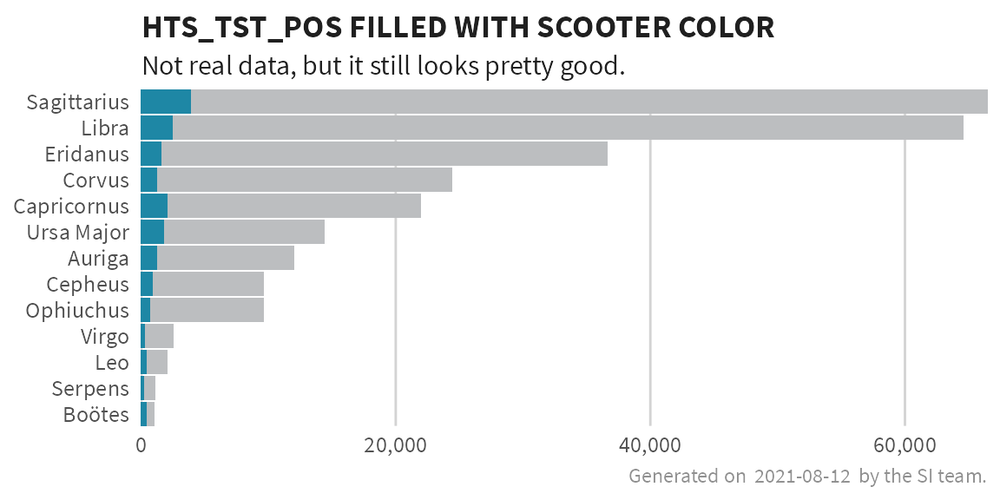

Introduction
This vignette provides best practices for applying SIEI recommended colors to visualizations using the glitr package.
Getting Started
To get started, load the standard OHA-SI libraries that are often used in analysis.
library(ggplot2)
library(dplyr)
library(magrittr)
library(tidyr)
library(forcats)
library(glitr)
library(scales)
library(ggtext)
library(extrafont)
# Take a look at what's inside the package
ls('package:glitr')
#> [1] "%>%" "burnt_sienna" "burnt_sienna_light"
#> [4] "cascade" "check_fonts" "color_caption"
#> [7] "color_gridline" "color_plot_text" "color_title"
#> [10] "denim" "denim_light" "genoa"
#> [13] "genoa_light" "golden_sand" "golden_sand_light"
#> [16] "grey10k" "grey20k" "grey30k"
#> [19] "grey40k" "grey50k" "grey60k"
#> [22] "grey70k" "grey80k" "grey90k"
#> [25] "hts" "hts_geo" "matterhorn"
#> [28] "moody_blue" "moody_blue_light" "nero"
#> [31] "old_rose" "old_rose_light" "scale_color_si"
#> [34] "scale_fill_si" "scooter" "scooter_light"
#> [37] "scooter_med" "si_palettes" "si_rampr"
#> [40] "si_save" "si_style" "si_style_map"
#> [43] "si_style_nolines" "si_style_void" "si_style_xgrid"
#> [46] "si_style_xline" "si_style_xyline" "si_style_ygrid"
#> [49] "si_style_yline" "siei_blue" "siei_dgrey"
#> [52] "siei_dorange" "siei_lblue" "siei_lorange"
#> [55] "siei_orange" "suva_grey" "trolley_grey"
#> [58] "trolley_grey_light" "usaid_black" "usaid_blue"
#> [61] "usaid_darkgrey" "usaid_lightblue" "usaid_lightgrey"
#> [64] "usaid_medblue" "usaid_medgrey" "usaid_red"
#> [67] "wapo_dblue" "wapo_dmauve" "wapo_dorange"
#> [70] "wapo_lblue" "wapo_lgreen" "wapo_lmauve"
#> [73] "wapo_lorange" "wapo_lorange2" "wapo_lpurple"
#> [76] "wapo_pushpop"The package can be divided into three main parts i) colors, that come as objects (such as grey30k or usaid_blue), ii) SI themes, that can be used to quickly apply SI plot defaults, and iii) helper functions, that interpolate palettes or apply palettes to a visualization. This vignette will focus on exploring colors and the SI themes.
Colors
A number of pre-defined colors come with the glitr package. All objects starting with ‘grey’ belong to a family of gray colors where grey10k is the lightest and grey90k the darkest. Objects starting with ‘usaid_’ are the official USAID colors while those starting with ‘wapo_’ are Washington Post inspired colors. color_ flags predefined colors that can be used to for filling in captions, gridlines, plot text or plot titles.
# Colors belonging to greys, usaid_, wapo_ or siei_.
grep("(grey|siei_|wapo_|usaid_)", ls('package:glitr'), value = T)
#> [1] "grey10k" "grey20k" "grey30k"
#> [4] "grey40k" "grey50k" "grey60k"
#> [7] "grey70k" "grey80k" "grey90k"
#> [10] "siei_blue" "siei_dgrey" "siei_dorange"
#> [13] "siei_lblue" "siei_lorange" "siei_orange"
#> [16] "suva_grey" "trolley_grey" "trolley_grey_light"
#> [19] "usaid_black" "usaid_blue" "usaid_darkgrey"
#> [22] "usaid_lightblue" "usaid_lightgrey" "usaid_medblue"
#> [25] "usaid_medgrey" "usaid_red" "wapo_dblue"
#> [28] "wapo_dmauve" "wapo_dorange" "wapo_lblue"
#> [31] "wapo_lgreen" "wapo_lmauve" "wapo_lorange"
#> [34] "wapo_lorange2" "wapo_lpurple" "wapo_pushpop"The set that is probably of most interest is the SIEI recommended colors. As you may recall from the Data Visualization Style Guild, the SI team has created seven core colors:
denim
old_rose
moody_blue
burnt_sienna
scooter
golden_sand
genoa
The hex codes for all these colors are added to your workspace when you load glitr.
# Any of these colors can be called by simply typing in the name of the color.
# The `show_col` function is from the `scales` package and is a handy way to preview a color.
show_col(genoa)

To access to full list of discrete or continuous palettes, see the si_palettes list or call the color palette directly using the name. Color names that are singular (genoa, old_rose) are categorical palettes based on suggested color pairs. Color names that are plural (genoa) are continuous palettes that can be applied to continuous variables. If you attempt to apply a discrete palette to a continuous variable, the color pairs will be recycled to the length of the vector you are attempting to encode.
si_palettes$genoa %>% show_col(labels = F, borders = F)
si_palettes$genoas %>% show_col(labels = F, borders = F)
Finally, if you want to create a custom palette from one of the color sets in the si_palettes list, you can do this using the si_rampr() function.
# si_rampr takes a palette name and the number of interpolated colors (n) you wish to return as arguments.
denim_pal <- si_rampr(pal_name = "denims", n = 25)
denim_pal
#> [1] "#BFDDFF" "#B4D3FF" "#A9C9FF" "#9EBFFE" "#93B5FE" "#89ABFC" "#7FA1F6"
#> [8] "#7597EF" "#6B8FE6" "#6187DD" "#577ED4" "#4D76CA" "#436EC1" "#3666B7"
#> [15] "#2A5EAE" "#1E56A5" "#114E9C" "#064693" "#033E89" "#00357F" "#002D75"
#> [22] "#00256B" "#001C61" "#001458" "#000C4F"
show_col(denim_pal, labels = FALSE, borders = FALSE)
Applying Colors
To add any of these colors to a graph, pass them as arguments in a ggplot2 call. We will work with one of the sample data sets to create a bar graph where positive testing results are colored with scooter.
# Munge the hts data down to testing yields for a given year
hts_bar <-
hts %>%
filter(period == "FY50", period_type == "cumulative") %>%
group_by(indicator, primepartner) %>%
summarise(total = sum(value, na.rm = TRUE)) %>%
ungroup() %>%
spread(indicator, total) %>%
mutate(yield = (HTS_TST_POS / HTS_TST),
prime_order = fct_reorder(primepartner, HTS_TST)) %>%
arrange(prime_order)
# Define testing results to be grey30k and positive results to be scooter.
# Play close attention to where the fill is placed in the geom_col() call.
# If placed inside the aesthetics, you will need to apply scale_fill_identity() to get the colors to render.
p <- hts_bar %>%
ggplot(aes(y = prime_order)) +
geom_col(aes(x = HTS_TST), fill = grey30k) +
geom_col(aes(x = HTS_TST_POS), fill = scooter) +
labs(x = NULL, y = NULL, title = "HTS_TST_POS FILLED WITH SCOOTER COLOR") +
coord_cartesian(expand = F) # Move names closer to y-axis
p
SI Themes
In order to create visualizations that appear to belong to the same family (Think Baldwin Brothers), glitr includes nine ggplot themes that simplify a plot down to its core elements. At the base of these themes is the si_style.
{kind=link}
grep("(si_style)", ls('package:glitr'), value = T)
#> [1] "si_style" "si_style_map" "si_style_nolines" "si_style_void"
#> [5] "si_style_xgrid" "si_style_xline" "si_style_xyline" "si_style_ygrid"
#> [9] "si_style_yline"We can see how this differs from the default ggplot2 theme by applying the theme to the plot above.
p + si_style()
You will notice the si_style strips the background gray color and converts the grid lines to a light shade of gray. As this plot is oriented horizontally, we can remove the extra y gridlines by using the si_style_xgrid theme. All of the si themes also come with pre-formatted titles, subtitles, and captions following the style guild standards.
p +
si_style_xgrid() +
scale_x_continuous(labels = comma)+
labs(caption = paste("Generated on ", Sys.Date(), " by the SI team."),
subtitle = "Not real data, but it still looks pretty good.") 